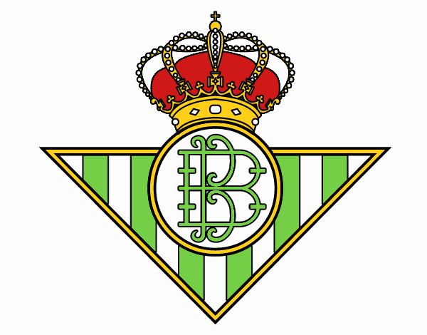

Habilidades
Habilidad excepcional en el control del balón, dribbling y precisión en los tiros. Excelente visión de juego y capacidad para crear oportunidades para mis compañeros de equipo.
- Contacto Tlf: +54 123 456 789
- Formación Instituto Superior de Deportes, Barcelona, España
- Experiencia FC Barcelona (2004-2021)
- Acerca de Ir al perfil personal
PERFIL PROFESIONAL
Soy Lionel Messi, un futbolista de clase mundial con una carrera excepcional en el FC Barcelona y el París Saint-Germain. Reconocido por mi talento excepcional, visión de juego y capacidad goleadora, he sido un líder en el campo y una inspiración para jugadores de todas las edades. Con mi incorporación al Real Betis, busco continuar mi legado en la Liga Española, aportando mi experiencia y habilidades para contribuir al éxito del equipo.
Idiomas
- Español (nativo)
- Inglés (fluido)